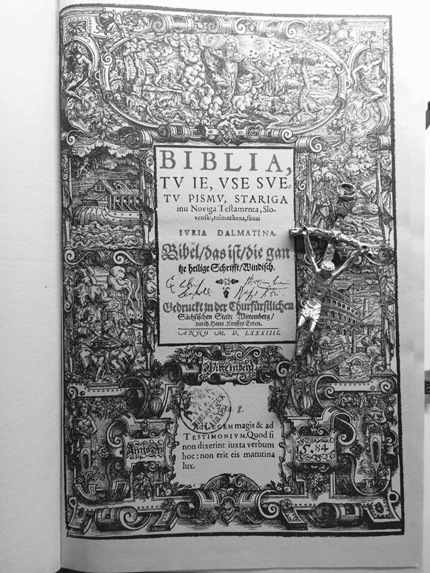

Krščanstvo je monoteistična vera in temelji na naukih Jezusa Kristusa, božjega sina. Tekom dveh tisočletij se je krščanstvo razvejalo. Prvi vzrok za to je bil ''Veliki razkol'' vzhodne pravoslavne cerkve in zahodne katoliške cerkve, ki se je zgodil leta 1054. V 16. stoletju pa se z reformacijo zahodna katoliška cerkev razdeli na protestantsko in rimskokatoliško.
